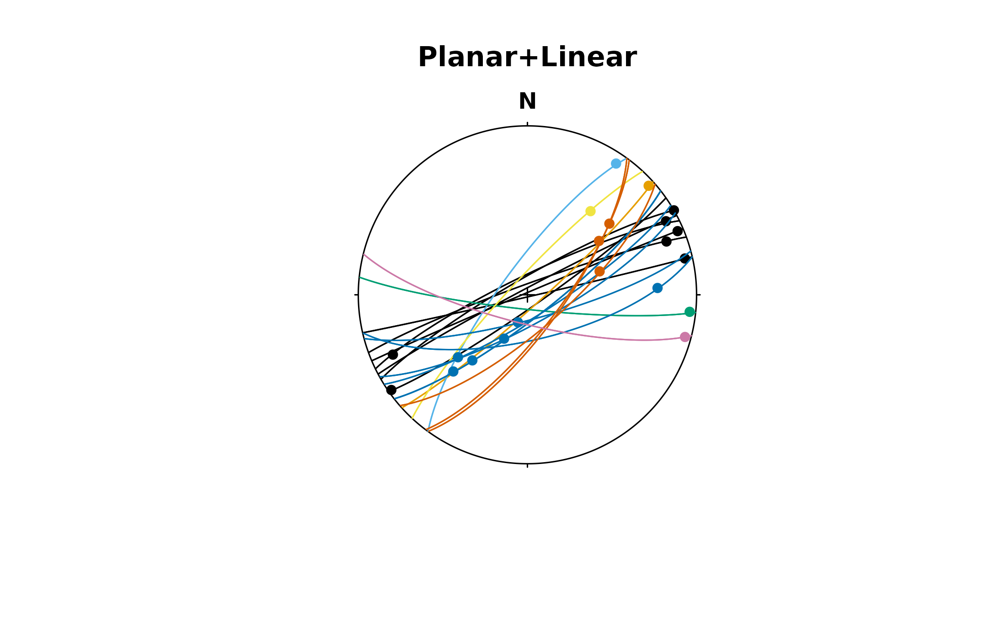
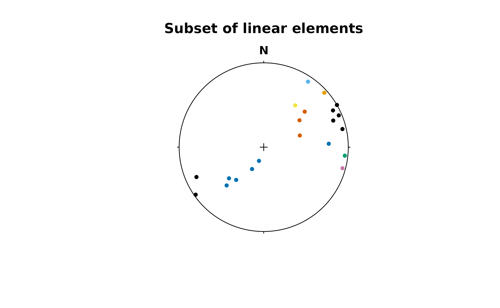

General
Data can be imported with already in R implemented functions such as
read.table(), read.csv() or from other
packages functions (e.g. {readr} and {data.table}).
Just make sure that the import produces a matrix or data.frame like
object with each measurement stored in a row, and columns representing
dip directions, dip angles, plunge, etc.
For example your .txt file is tab-separated and may look
like this:
| Dip direction | Dip | |
|---|---|---|
| 1 | 120 | 50 |
| 2 | 60 | 12 |
| 3 | 287 | 82 |
you could import the file like
imported_data <- read.table(
"path/to/my/file.xt",
header = TRUE,
sep = "",
row.names = 1
)You can also use
file.choose()to open the explorer window and navigate to your file.
This imports the tab-separated file as an "data.frame"
object with the first column representing the row names, and the two
other columns the headers of the table. Say these measurements represent
plane measurements (e.g. bedding or fault plane orientation), we just
need to coerce that data.frame into a "Plane" object:
my_planes <- as.Plane(imported_data)If you want a "Line" object, coerce the data.frame using
as.Line(). For "Pair" (line-on-plane) and
"Fault" (line-on-plane with sense of motion) objects,
you’ll need a four and five-column table, respectively, representing dip
directions, dip angle, trend, and plunge and sense measurements. Then
use as.Pair() or as.Fault() to parse the
object into {structr}.
Note that the dip direction is the preferred notation for plane measurements in {structr} as it undoubtly indicates the orientation by using only 2 parameters.
Some helpers
There are several other conventions for the notation of plane and line orientations from compass measurements. Here are some functions for you to correctly convert your measurements into the notation required for the use in {structr}.
Right-hand rule
To converts strike measurements into dip directions using right-hand rule:
strike_measurements <- c(270, 315, 0, 45, 90, 135, 180, 225, 270)
rhr2dd(strike_measurements)
#> [1] 0 45 90 135 180 225 270 315 0
# or from dip direction to strike (using right-hand rule):
dip_directions <- c(0, 45, 90, 135, 180, 225, 270, 315, 360)
dd2rhr(dip_directions)
#> [1] 270 315 0 45 90 135 180 225 270Quadrant notation
Sometimes, strike notation doesn’t follow the right hand rule.
Instead the quadrant of the dip direction is indicated by a Cardinal
letter, i.e. “N”, “E”, “S”, and “W”. In that case you can use the
function quadrant2dd()
strike_direction <- c(270, 315, 0, 45, 90, 135, 180, 225, 270) # strike in left-hand-rule
dip_quadrtant <- c("N", "E", "E", "S", "S", "W", "W", "N", "N") # dip quadrant
quadrant2dd(strike_direction, dip_quadrtant)
#> [1] 0 45 90 135 180 225 270 315 0If your table contains the strike and dip-quadrant measurement in a
single column, e.g. “270N”, you can conveniently split the column into
two by using split_strike()
split_strike("270N")
#> $measurement
#> 270N
#> 270
#>
#> $direction
#> 270N
#> "N"Fault notation
Fault (and Pair) measurements are usually a combination of Plane and
Ray or Line measurements. Then they can be defined using the
Fault() and Pair() functions. However,
sometimes the Line or Ray component is given by the rake angle, which is
the angle between the fault strike and the lineation. Unfortunately,
there are several different ways how to indicate the proper orientation
of the lineation.
Fault plane and rake (or pitch)
This is the standard notation. Here, the rake is the angle between lineation and the right-handrule strike of the fault plane. The angle is measured on the fault plane, clockwise from the strike, where down-plunging is positive. Rake values range between 0 and 360° (or −180° and 180°).
If your datra follows this convention, use the function
Fault_from_rake()
fault_plane <- Plane(c(120, 120, 100, 0), c(60, 60, 50, 40))
fault_pitch <- c(84.7202, -10, 30, 180)
Fault_from_rake(fault_plane, rake = fault_pitch)
#> Fault object (n = 4):
#> dip_direction dip azimuth plunge sense
#> [1,] 120 60 109.52858 5.958159e+01 1
#> [2,] 120 60 24.96163 -8.649165e+00 -1
#> [3,] 100 50 30.36057 2.252101e+01 1
#> [4,] 0 40 90.00000 1.487542e-14 1Fault plane, rake angle and plunge quadrant
Here, the rake angle is measured in the fault plane between the strike given by either right or left-hand rule and the lineation. The angle is recorded in a clockwise sense (looking down upon the fault plane) and has a range from 0 to 180%deg;. The quadrant of plunge indicates the direction of the strike from which the rake angle is measured.
If this is the notation used, call the function
Fault_from_rake_quadrant() and set
type="plunge"
dip <- c(5, 10, 15, 30, 40, 55, 65, 75, 90)
dip_dir <- c(180, 225, 270, 315, 360, 0, 45, 90, 135)
rake1 <- c(0, 45, 90, 135, 180, 45, 90, 135, 180)
plunge_quadrant <- c("E", "S", "W", "N", "E", "W", "E", "S", "W")
Fault_from_rake_quadrant(Plane(dip_dir, dip), rake1, plunge_quadrant, type = "plunge")
#> Fault object (n = 9):
#> dip_direction dip azimuth plunge sense
#> [1,] 180 5 270.000000 -1.220766e-15 1
#> [2,] 225 10 179.561451 7.053022e+00 1
#> [3,] 270 15 270.000000 1.500000e+01 1
#> [4,] 315 30 4.106605 2.070481e+01 1
#> [5,] 0 40 90.000000 1.487542e-14 1
#> [6,] 0 55 299.837566 3.539626e+01 1
#> [7,] 45 65 45.000000 6.500000e+01 1
#> [8,] 90 75 165.489181 4.307952e+01 1
#> [9,] 135 90 225.000000 7.016709e-15 1Fault plane, rake angle and rake quadrant
Here, the rake is the acute angle measured in the
fault plane between the strike of the fault and the lineation. Starting
from the strike line, the angle is measured in a sense which is down the
dip of the plane. Quadrant of rake indicate the direction of the strike
from which the rake angle is measured, i.e. whether right-hand or
left-hand rule is followed. Angle ranges from 0 to 90 °. Use
sense argument to specify the sense of motion.
If this is the notation used, call the function
Fault_from_rake_quadrant() and set
type="rake"
rake2 <- c(0, 45, 90, 45, 0, 45, 90, 45, 0)
rake_quadrant <- c("E", "S", "S", "E", "E", "W", "N", "S", "W")
Fault_from_rake_quadrant(Plane(dip_dir, dip), rake2, rake_quadrant, type = "rake")
#> Fault object (n = 9):
#> dip_direction dip azimuth plunge sense
#> [1,] 180 5 270.000000 0.000000 1
#> [2,] 225 10 179.561451 7.053022 1
#> [3,] 270 15 270.000000 15.000000 1
#> [4,] 315 30 4.106605 20.704811 1
#> [5,] 0 40 90.000000 0.000000 1
#> [6,] 0 55 299.837566 35.396260 1
#> [7,] 45 65 45.000000 65.000000 1
#> [8,] 90 75 165.489181 43.079517 1
#> [9,] 135 90 225.000000 0.000000 1StraboSpot
The package {structr} can import all the collected field data from your Strabospot project.
The best way is to import the .json file database of the StraboSpot project. Go to your field data My StraboField Data > scroll down to your project > click on Options… > Download Project in Strabo JSON Format
Now you can import the downloaded file via
read_strabo_JSON():
strabo_data <- read_strabo_JSON("path/to/my/file.json")The import function produces a list object with all the
meta data (data), the geographic locations
(spots), the used tags (tags), and all the
plane (planes) and line measurements (lines)
already converted into {structr} data objects.
names(strabo_data)
#> [1] "data" "spots" "tags" "planar" "linear"
plot(strabo_data$linear, col = assign_col_d(strabo_data$data$spot_id))
#> Warning in (function (n) : This manual palette can handle a maximum of 8
#> values. You have supplied 93
title(main = 'All linear elements')The "strabo" objects are list objects containing
orientation data as planar and linear objects as well as several slots
containing your metadata (data) and geospatial information
(spots).
IMPORTANT: The meta data and the plane and line measurements all share the same row indices. Thus, planes and lines with identical row indices have been measured simultaneously (e.g. as a fault).
Pair(strabo_data$planar, strabo_data$linear) |>
plot(col = assign_col_d(strabo_data$data$spot_id))
#> Warning in (function (n) : This manual palette can handle a maximum of 8
#> values. You have supplied 93
title(main = 'Planar+Linear')
This import allows that the connection of simultaneously measured plane and lines (such as faults and their striae) will be preserved. Unfortunately, if you export your StraboSpot field data into a
.csvor.xlsfile, this connection is lost…
Alternatively, the function read_strabo_xls() and
read_strabo_mobile() provide import of .xls
and any character-separated table files (e.g. .csv or
.txt).
Keep in mind that these import options do not properly identify whether your lineation measurements are ray-like or line-like vectors, nor does it combine simultaneously lineation-plane measurements to either pairs or faults. Thus, you’ll need to carefully convert these data dataypes after the import to move forward.
Subsetting Strabo objects
One advantage of "strabo" objects is that the
orientation data is accompanied with metadata such as GPS coordinates,
descriptions etc. This makes it a data base which can be filtered,
arranged and manipulated using queries the way you want it.
You can subset (or filter) the objects based on columns in any of these list elements, and it returns only the selected rows in all elements of the list, including the orientation data:
strabo_prj_subset <- subset(strabo_prj, strabo_prj$data$quality > 3)
plot(strabo_prj_subset$linear, col = assign_col_d(strabo_prj_subset$data$spot_id))
#> Warning in (function (n) : This manual palette can handle a maximum of 8
#> values. You have supplied 78
title(main = 'Subset of linear elements')
Sort Strabo objects
The function sort_by() can sort your strabo objects
based on one or more columns in the data and will
automatically sort all planar and linear elements.
#> $data
#> id dip_direction dip strike trend
#> <char> <num> <num> <num> <num>
#> 1: bd459927-9a46-429e-969f-18c5c8d34df9 158 88 68 69
#> 2: 4944454c-dcb7-4732-9ad7-43df22c3b202 159 87 69 70
#> 3: 482be319-1a85-485c-a304-b290b7df5cce 337 89 247 67
#> 4: ae51a581-9c2c-4137-82e9-391865e743c8 349 86 259 259
#> 5: cf641d6a-3d06-4fc0-9856-592949d051ac 350 84 260 76
#> ---
#> 319: 515437db-b8c6-42fb-ac75-40ecbb04d06b 162 85 72 77
#> 320: 990aba11-c589-42fe-9371-6dd0bb2f0b9b 210 77 120 125
#> 321: fdcccf01-e55f-49fe-b13f-99e52691d530 142 65 52 194
#> 322: f9be6859-0837-4225-9fdd-e3bc6d79329a 332 88 242 62
#> 323: 1d777418-201b-4e19-8579-f1ba6044ba64 140 83 50 230
#> plunge associated planar_type quality unix_timestamp notes
#> <num> <lgcl> <char> <char> <num> <char>
#> 1: 38 TRUE <NA> 1 1.687792e+12 <NA>
#> 2: 22 TRUE <NA> 1 1.687792e+12 <NA>
#> 3: 16 TRUE <NA> 1 1.687792e+12 <NA>
#> 4: 0 TRUE <NA> 1 1.687792e+12 <NA>
#> 5: 31 TRUE <NA> 1 1.687792e+12 <NA>
#> ---
#> 319: 48 TRUE <NA> <NA> 1.693159e+12 <NA>
#> 320: 22 TRUE <NA> <NA> 1.721842e+12 <NA>
#> 321: 53 TRUE <NA> <NA> 1.721844e+12 <NA>
#> 322: 8 TRUE <NA> <NA> 1.721916e+12 <NA>
#> 323: 2 TRUE <NA> <NA> 1.721916e+12 <NA>
#> modified_timestamp spot spot_id feature_type
#> <num> <char> <char> <char>
#> 1: NA 23-TS-Moss-40 16877910624414 foliation
#> 2: NA 23-TS-Moss-40 16877910624414 foliation
#> 3: NA 23-TS-Moss-40 16877910624414 foliation
#> 4: NA 23-TS-Moss-40 16877910624414 foliation
#> 5: NA 23-TS-Moss-40 16877910624414 foliation
#> ---
#> 319: NA 23-TS-Moss-182 16931591128778 foliation
#> 320: NA 24TS-5 17218408233859 foliation
#> 321: NA 24TS-6 17218433797553 foliation
#> 322: NA 24TS-15 17219160056874 foliation
#> 323: NA 24TS-15 17219160056874 foliation
#> foliation_type label contact_type fault_or_sz_type bedding_type
#> <char> <char> <char> <char> <char>
#> 1: schistosity <NA> <NA> <NA> <NA>
#> 2: schistosity <NA> <NA> <NA> <NA>
#> 3: schistosity <NA> <NA> <NA> <NA>
#> 4: schistosity <NA> <NA> <NA> <NA>
#> 5: schistosity <NA> <NA> <NA> <NA>
#> ---
#> 319: slatey_cleavage <NA> <NA> <NA> <NA>
#> 320: <NA> <NA> <NA> <NA> <NA>
#> 321: <NA> <NA> <NA> <NA> <NA>
#> 322: <NA> <NA> <NA> <NA> <NA>
#> 323: <NA> <NA> <NA> <NA> <NA>
#> vein_fill directional_indicators vein_type other_vein_fill
#> <char> <char> <char> <char>
#> 1: <NA> <NA> <NA> <NA>
#> 2: <NA> <NA> <NA> <NA>
#> 3: <NA> <NA> <NA> <NA>
#> 4: <NA> <NA> <NA> <NA>
#> 5: <NA> <NA> <NA> <NA>
#> ---
#> 319: <NA> <NA> <NA> <NA>
#> 320: <NA> <NA> <NA> <NA>
#> 321: <NA> <NA> <NA> <NA>
#> 322: <NA> <NA> <NA> <NA>
#> 323: <NA> <NA> <NA> <NA>
#> foliation_defined_by movement other_feature fracture_type
#> <char> <char> <char> <char>
#> 1: <NA> <NA> <NA> <NA>
#> 2: <NA> <NA> <NA> <NA>
#> 3: <NA> <NA> <NA> <NA>
#> 4: <NA> <NA> <NA> <NA>
#> 5: <NA> <NA> <NA> <NA>
#> ---
#> 319: Bt <NA> <NA> <NA>
#> 320: <NA> <NA> <NA> <NA>
#> 321: <NA> <NA> <NA> <NA>
#> 322: <NA> <NA> <NA> <NA>
#> 323: <NA> <NA> <NA> <NA>
#> movement_justification linear_type linear_quality linear_notes
#> <char> <char> <char> <char>
#> 1: <NA> linear_orientation 1 <NA>
#> 2: <NA> linear_orientation 1 <NA>
#> 3: <NA> linear_orientation 1 <NA>
#> 4: <NA> linear_orientation 1 <NA>
#> 5: <NA> linear_orientation 1 <NA>
#> ---
#> 319: <NA> linear_orientation <NA> <NA>
#> 320: <NA> linear_orientation <NA> <NA>
#> 321: <NA> linear_orientation <NA> <NA>
#> 322: <NA> linear_orientation <NA> <NA>
#> 323: <NA> linear_orientation <NA> <NA>
#> linear_feature_type linear_defined_by linear_label type
#> <char> <char> <char> <char>
#> 1: stretching Hbl <NA> planar_orientation
#> 2: stretching Hbl <NA> planar_orientation
#> 3: stretching Hbl <NA> planar_orientation
#> 4: stretching Hbl <NA> planar_orientation
#> 5: stretching Hbl <NA> planar_orientation
#> ---
#> 319: mineral_align Sta <NA> planar_orientation
#> 320: mineral_align <NA> <NA> planar_orientation
#> 321: mineral_align <NA> <NA> planar_orientation
#> 322: mineral_align <NA> <NA> planar_orientation
#> 323: mineral_align <NA> <NA> planar_orientation
#> linear_unix_timestamp linear_id defined_by
#> <num> <char> <char>
#> 1: 1.687792e+12 ac9e945e-9176-4071-a5a3-a65061bd9fa1 <NA>
#> 2: 1.687792e+12 219e3793-497e-46be-bdd6-31b970b9186a <NA>
#> 3: 1.687792e+12 e799be63-352b-42fb-a48e-9e8b27d2552b <NA>
#> 4: 1.687792e+12 606bdc8a-f66c-48f9-be60-5a189fedbe45 <NA>
#> 5: 1.687792e+12 669c2a86-4e85-44f3-b29a-d31e61c5a19f <NA>
#> ---
#> 319: 1.693159e+12 c0fff5d1-967d-4b33-a7c4-bb5f92ee7863 <NA>
#> 320: 1.721842e+12 b759ecf6-e65a-424e-a075-cd986e4d7e49 <NA>
#> 321: 1.721844e+12 2f3cf8f1-9d0d-46b3-9118-3f56ee44304b <NA>
#> 322: 1.721916e+12 7204ea74-45c9-43d8-9034-c0079ceab24c <NA>
#> 323: 1.721916e+12 aae17048-ee82-4fcd-849f-8f9b1aff002e <NA>
#> linear_other_feature
#> <char>
#> 1: <NA>
#> 2: <NA>
#> 3: <NA>
#> 4: <NA>
#> 5: <NA>
#> ---
#> 319: <NA>
#> 320: <NA>
#> 321: <NA>
#> 322: <NA>
#> 323: <NA>
#>
#> $planar
#> Plane object (n = 323):
#> dip_direction dip
#> [1,] 158 88
#> [2,] 159 87
#> [3,] 337 89
#> [4,] 349 86
#> [5,] 350 84
#> [6,] 342 89
#> [7,] 132 74
#> [8,] 171 88
#> [9,] 351 88
#> [10,] 186 78
#> [11,] 141 68
#> [12,] 168 68
#> [13,] 197 59
#> [14,] 158 90
#> [15,] 347 88
#> [16,] 161 84
#> [17,] 341 87
#> [18,] 154 70
#> [19,] 353 89
#> [20,] 329 83
#> [21,] 330 84
#> [22,] 325 66
#> [23,] 329 80
#> [24,] 166 89
#> [25,] 150 48
#> [26,] 145 49
#> [27,] 146 63
#> [28,] 345 74
#> [29,] 316 85
#> [30,] 145 86
#> [31,] 327 82
#> [32,] 190 33
#> [33,] 167 30
#> [34,] 187 35
#> [35,] 161 88
#> [36,] 50 60
#> [37,] 348 88
#> [38,] 325 82
#> [39,] 332 87
#> [40,] 337 89
#> [41,] 145 84
#> [42,] 330 82
#> [43,] 334 81
#> [44,] 340 85
#> [45,] 167 89
#> [46,] 138 84
#> [47,] 306 77
#> [48,] 186 83
#> [49,] 313 82
#> [50,] 148 79
#> [51,] 142 79
#> [52,] 142 79
#> [53,] 151 76
#> [54,] 165 78
#> [55,] 167 68
#> [56,] 126 73
#> [57,] 127 74
#> [58,] 139 73
#> [59,] 194 76
#> [60,] 160 85
#> [61,] 166 81
#> [62,] 165 75
#> [63,] 162 84
#> [64,] 165 81
#> [65,] 166 85
#> [66,] 152 47
#> [67,] 323 75
#> [68,] 337 72
#> [69,] 163 79
#> [70,] 343 84
#> [71,] 156 88
#> [72,] 161 80
#> [73,] 348 86
#> [74,] 328 89
#> [75,] 337 77
#> [76,] 109 67
#> [77,] 113 83
#> [78,] 113 75
#> [79,] 115 68
#> [80,] 117 63
#> [81,] 106 73
#> [82,] 111 70
#> [83,] 117 69
#> [84,] 129 66
#> [85,] 129 69
#> [86,] 134 73
#> [87,] 111 74
#> [88,] 108 65
#> [89,] 118 80
#> [90,] 297 74
#> [91,] 143 79
#> [92,] 140 77
#> [93,] 153 88
#> [94,] 158 77
#> [95,] 137 78
#> [96,] 128 80
#> [97,] 327 89
#> [98,] 329 83
#> [99,] 334 87
#> [100,] 144 87
#> [101,] 146 84
#> [102,] 334 87
#> [103,] 142 80
#> [104,] 151 78
#> [105,] 137 56
#> [106,] 141 75
#> [107,] 155 84
#> [108,] 348 82
#> [109,] 340 84
#> [110,] 338 84
#> [111,] 349 85
#> [112,] 154 89
#> [113,] 336 84
#> [114,] 352 89
#> [115,] 344 88
#> [116,] 180 87
#> [117,] 346 82
#> [118,] 320 74
#> [119,] 135 85
#> [120,] 309 85
#> [121,] 326 80
#> [122,] 330 78
#> [123,] 311 78
#> [124,] 146 88
#> [125,] 332 87
#> [126,] 338 87
#> [127,] 3 81
#> [128,] 195 82
#> [129,] 150 81
#> [130,] 311 72
#> [131,] 315 79
#> [132,] 333 85
#> [133,] 313 81
#> [134,] 162 76
#> [135,] 286 68
#> [136,] 161 87
#> [137,] 335 81
#> [138,] 327 83
#> [139,] 313 68
#> [140,] 316 71
#> [141,] 333 75
#> [142,] 319 89
#> [143,] 332 74
#> [144,] 149 89
#> [145,] 86 38
#> [146,] 320 68
#> [147,] 285 86
#> [148,] 330 76
#> [149,] 337 83
#> [150,] 130 89
#> [151,] 304 71
#> [152,] 148 86
#> [153,] 346 85
#> [154,] 347 89
#> [155,] 339 83
#> [156,] 151 84
#> [157,] 318 87
#> [158,] 146 89
#> [159,] 169 89
#> [160,] 328 88
#> [161,] 321 47
#> [162,] 191 47
#> [163,] 299 48
#> [164,] 178 78
#> [165,] 191 84
#> [166,] 295 77
#> [167,] 305 89
#> [168,] 192 76
#> [169,] 164 73
#> [170,] 160 55
#> [171,] 322 54
#> [172,] 299 70
#> [173,] 169 67
#> [174,] 166 75
#> [175,] 336 85
#> [176,] 193 79
#> [177,] 352 53
#> [178,] 152 43
#> [179,] 344 76
#> [180,] 311 46
#> [181,] 297 40
#> [182,] 323 77
#> [183,] 318 73
#> [184,] 314 88
#> [185,] 319 71
#> [186,] 159 86
#> [187,] 335 84
#> [188,] 339 86
#> [189,] 330 89
#> [190,] 326 88
#> [191,] 334 81
#> [192,] 330 89
#> [193,] 333 81
#> [194,] 336 88
#> [195,] 332 84
#> [196,] 334 78
#> [197,] 141 88
#> [198,] 341 81
#> [199,] 195 36
#> [200,] 194 32
#> [201,] 342 86
#> [202,] 334 78
#> [203,] 353 82
#> [204,] 4 72
#> [205,] 5 32
#> [206,] 0 61
#> [207,] 9 73
#> [208,] 10 36
#> [209,] 23 35
#> [210,] 326 26
#> [211,] 328 37
#> [212,] 339 60
#> [213,] 338 58
#> [214,] 8 59
#> [215,] 5 58
#> [216,] 353 35
#> [217,] 329 66
#> [218,] 331 70
#> [219,] 337 74
#> [220,] 333 81
#> [221,] 157 82
#> [222,] 12 22
#> [223,] 89 57
#> [224,] 62 40
#> [225,] 34 64
#> [226,] 350 59
#> [227,] 14 51
#> [228,] 353 60
#> [229,] 119 56
#> [230,] 323 73
#> [231,] 341 89
#> [232,] 350 29
#> [233,] 348 50
#> [234,] 334 55
#> [235,] 342 86
#> [236,] 350 74
#> [237,] 345 71
#> [238,] 329 73
#> [239,] 336 72
#> [240,] 341 73
#> [241,] 306 59
#> [242,] 331 66
#> [243,] 161 72
#> [244,] 348 86
#> [245,] 173 89
#> [246,] 342 78
#> [247,] 164 87
#> [248,] 343 74
#> [249,] 342 57
#> [250,] 347 82
#> [251,] 314 73
#> [252,] 320 82
#> [253,] 163 85
#> [254,] 336 74
#> [255,] 345 81
#> [256,] 159 87
#> [257,] 165 89
#> [258,] 170 81
#> [259,] 346 82
#> [260,] 338 85
#> [261,] 356 88
#> [262,] 161 77
#> [263,] 331 70
#> [264,] 329 66
#> [265,] 322 74
#> [266,] 358 83
#> [267,] 358 87
#> [268,] 336 85
#> [269,] 332 78
#> [270,] 164 85
#> [271,] 162 88
#> [272,] 331 87
#> [273,] 169 77
#> [274,] 156 85
#> [275,] 146 79
#> [276,] 163 64
#> [277,] 128 85
#> [278,] 339 78
#> [279,] 338 77
#> [280,] 331 82
#> [281,] 332 84
#> [282,] 150 74
#> [283,] 337 81
#> [284,] 330 87
#> [285,] 324 81
#> [286,] 344 64
#> [287,] 339 85
#> [288,] 341 62
#> [289,] 338 58
#> [290,] 159 79
#> [291,] 341 80
#> [292,] 335 79
#> [293,] 345 50
#> [294,] 344 52
#> [295,] 346 60
#> [296,] 6 42
#> [297,] 6 48
#> [298,] 4 38
#> [299,] 0 42
#> [300,] 2 41
#> [301,] 349 41
#> [302,] 352 36
#> [303,] 348 41
#> [304,] 348 52
#> [305,] 357 36
#> [306,] 346 65
#> [307,] 352 42
#> [308,] 354 30
#> [309,] 2 39
#> [310,] 346 46
#> [311,] 148 42
#> [312,] 150 46
#> [313,] 139 51
#> [314,] 158 51
#> [315,] 157 69
#> [316,] 343 74
#> [317,] 345 71
#> [318,] 349 74
#> [319,] 162 85
#> [320,] 210 77
#> [321,] 142 65
#> [322,] 332 88
#> [323,] 140 83
#>
#> $linear
#> Line object (n = 323):
#> azimuth plunge
#> [1,] 69 38
#> [2,] 70 22
#> [3,] 67 16
#> [4,] 259 0
#> [5,] 76 31
#> [6,] 71 12
#> [7,] 163 71
#> [8,] 261 0
#> [9,] 261 6
#> [10,] 98 6
#> [11,] 225 13
#> [12,] 111 53
#> [13,] 124 26
#> [14,] 248 15
#> [15,] 258 4
#> [16,] 74 26
#> [17,] 71 3
#> [18,] 79 35
#> [19,] 83 17
#> [20,] 240 10
#> [21,] 241 12
#> [22,] 236 2
#> [23,] 240 2
#> [24,] 76 4
#> [25,] 75 16
#> [26,] 67 13
#> [27,] 64 15
#> [28,] 256 1
#> [29,] 226 0
#> [30,] 55 9
#> [31,] 57 0
#> [32,] 261 12
#> [33,] 174 30
#> [34,] 151 30
#> [35,] 71 4
#> [36,] 139 2
#> [37,] 78 9
#> [38,] 237 12
#> [39,] 62 8
#> [40,] 67 4
#> [41,] 235 2
#> [42,] 60 0
#> [43,] 246 14
#> [44,] 69 13
#> [45,] 77 5
#> [46,] 48 4
#> [47,] 34 7
#> [48,] 96 4
#> [49,] 37 38
#> [50,] 228 44
#> [51,] 220 48
#> [52,] 224 37
#> [53,] 208 66
#> [54,] 199 76
#> [55,] 87 24
#> [56,] 49 36
#> [57,] 53 46
#> [58,] 72 53
#> [59,] 105 4
#> [60,] 73 27
#> [61,] 76 4
#> [62,] 81 20
#> [63,] 72 1
#> [64,] 255 1
#> [65,] 77 10
#> [66,] 241 1
#> [67,] 48 17
#> [68,] 62 16
#> [69,] 78 25
#> [70,] 70 22
#> [71,] 67 22
#> [72,] 74 20
#> [73,] 76 23
#> [74,] 58 4
#> [75,] 62 24
#> [76,] 183 35
#> [77,] 24 7
#> [78,] 26 11
#> [79,] 29 10
#> [80,] 31 7
#> [81,] 17 1
#> [82,] 22 3
#> [83,] 28 2
#> [84,] 213 13
#> [85,] 213 15
#> [86,] 217 23
#> [87,] 201 0
#> [88,] 19 3
#> [89,] 29 7
#> [90,] 20 24
#> [91,] 58 24
#> [92,] 55 22
#> [93,] 63 12
#> [94,] 247 2
#> [95,] 47 3
#> [96,] 39 3
#> [97,] 56 4
#> [98,] 239 0
#> [99,] 64 10
#> [100,] 55 12
#> [101,] 57 7
#> [102,] 64 5
#> [103,] 55 16
#> [104,] 62 4
#> [105,] 52 7
#> [106,] 52 4
#> [107,] 67 21
#> [108,] 75 17
#> [109,] 64 46
#> [110,] 65 23
#> [111,] 76 32
#> [112,] 244 4
#> [113,] 63 23
#> [114,] 82 17
#> [115,] 74 23
#> [116,] 91 27
#> [117,] 75 10
#> [118,] 231 6
#> [119,] 48 33
#> [120,] 38 7
#> [121,] 51 30
#> [122,] 57 15
#> [123,] 29 43
#> [124,] 57 19
#> [125,] 62 8
#> [126,] 248 13
#> [127,] 92 4
#> [128,] 106 2
#> [129,] 66 33
#> [130,] 41 0
#> [131,] 227 10
#> [132,] 243 8
#> [133,] 223 0
#> [134,] 252 0
#> [135,] 198 5
#> [136,] 71 10
#> [137,] 62 18
#> [138,] 237 1
#> [139,] 35 17
#> [140,] 226 0
#> [141,] 60 11
#> [142,] 49 10
#> [143,] 56 21
#> [144,] 239 14
#> [145,] 94 37
#> [146,] 236 13
#> [147,] 14 17
#> [148,] 245 21
#> [149,] 250 25
#> [150,] 40 19
#> [151,] 31 8
#> [152,] 60 35
#> [153,] 75 15
#> [154,] 77 16
#> [155,] 66 23
#> [156,] 64 29
#> [157,] 228 1
#> [158,] 236 19
#> [159,] 79 0
#> [160,] 57 21
#> [161,] 268 33
#> [162,] 227 41
#> [163,] 252 37
#> [164,] 266 10
#> [165,] 103 19
#> [166,] 206 4
#> [167,] 35 73
#> [168,] 281 4
#> [169,] 92 46
#> [170,] 95 33
#> [171,] 16 38
#> [172,] 213 12
#> [173,] 86 18
#> [174,] 84 28
#> [175,] 248 22
#> [176,] 104 7
#> [177,] 73 11
#> [178,] 81 16
#> [179,] 254 0
#> [180,] 228 7
#> [181,] 222 12
#> [182,] 50 15
#> [183,] 47 4
#> [184,] 43 22
#> [185,] 41 23
#> [186,] 70 11
#> [187,] 248 30
#> [188,] 253 39
#> [189,] 240 14
#> [190,] 237 16
#> [191,] 252 46
#> [192,] 240 35
#> [193,] 249 30
#> [194,] 247 38
#> [195,] 245 31
#> [196,] 245 3
#> [197,] 230 44
#> [198,] 251 5
#> [199,] 197 36
#> [200,] 200 31
#> [201,] 72 1
#> [202,] 39 64
#> [203,] 72 54
#> [204,] 65 57
#> [205,] 347 31
#> [206,] 312 50
#> [207,] 93 17
#> [208,] 61 25
#> [209,] 65 28
#> [210,] 54 1
#> [211,] 51 5
#> [212,] 252 5
#> [213,] 255 10
#> [214,] 86 20
#> [215,] 81 22
#> [216,] 64 13
#> [217,] 245 11
#> [218,] 244 8
#> [219,] 65 6
#> [220,] 63 3
#> [221,] 67 1
#> [222,] 31 20
#> [223,] 73 56
#> [224,] 49 40
#> [225,] 111 25
#> [226,] 66 22
#> [227,] 293 10
#> [228,] 71 20
#> [229,] 51 29
#> [230,] 36 45
#> [231,] 70 25
#> [232,] 67 7
#> [233,] 60 20
#> [234,] 53 16
#> [235,] 71 12
#> [236,] 74 21
#> [237,] 261 17
#> [238,] 49 30
#> [239,] 61 13
#> [240,] 57 39
#> [241,] 218 2
#> [242,] 54 15
#> [243,] 76 14
#> [244,] 78 0
#> [245,] 83 8
#> [246,] 253 7
#> [247,] 254 12
#> [248,] 72 3
#> [249,] 61 18
#> [250,] 76 4
#> [251,] 44 1
#> [252,] 232 14
#> [253,] 75 19
#> [254,] 285 66
#> [255,] 73 9
#> [256,] 70 6
#> [257,] 255 13
#> [258,] 82 15
#> [259,] 70 38
#> [260,] 61 55
#> [261,] 266 0
#> [262,] 74 15
#> [263,] 58 10
#> [264,] 58 1
#> [265,] 48 15
#> [266,] 87 10
#> [267,] 269 14
#> [268,] 65 8
#> [269,] 60 13
#> [270,] 76 24
#> [271,] 72 16
#> [272,] 60 9
#> [273,] 83 16
#> [274,] 67 9
#> [275,] 57 5
#> [276,] 81 15
#> [277,] 39 10
#> [278,] 67 8
#> [279,] 67 4
#> [280,] 59 16
#> [281,] 61 11
#> [282,] 66 21
#> [283,] 66 1
#> [284,] 240 10
#> [285,] 234 0
#> [286,] 61 25
#> [287,] 67 17
#> [288,] 62 16
#> [289,] 61 11
#> [290,] 71 8
#> [291,] 70 8
#> [292,] 63 13
#> [293,] 63 13
#> [294,] 67 9
#> [295,] 71 9
#> [296,] 291 13
#> [297,] 79 17
#> [298,] 278 3
#> [299,] 83 6
#> [300,] 79 11
#> [301,] 72 5
#> [302,] 64 12
#> [303,] 68 8
#> [304,] 61 20
#> [305,] 71 11
#> [306,] 68 16
#> [307,] 68 12
#> [308,] 69 8
#> [309,] 71 16
#> [310,] 52 22
#> [311,] 74 14
#> [312,] 80 19
#> [313,] 63 17
#> [314,] 76 10
#> [315,] 70 7
#> [316,] 254 3
#> [317,] 258 9
#> [318,] 77 5
#> [319,] 77 48
#> [320,] 125 22
#> [321,] 194 53
#> [322,] 62 8
#> [323,] 230 2
#>
#> attr(,"class")
#> [1] "list" "strabo"Drill core data
Orientations in drill-cores are usually given by α and β angles
(lineations on a plane additionally have a γ angle) which describe
orientations with respect to the drill orientation. To convert these
angles from the “drillcore coordinate reference system” to our
geographical reference system, you may use the function
drillcore_transformation(). Learn more about it in this tutorial.